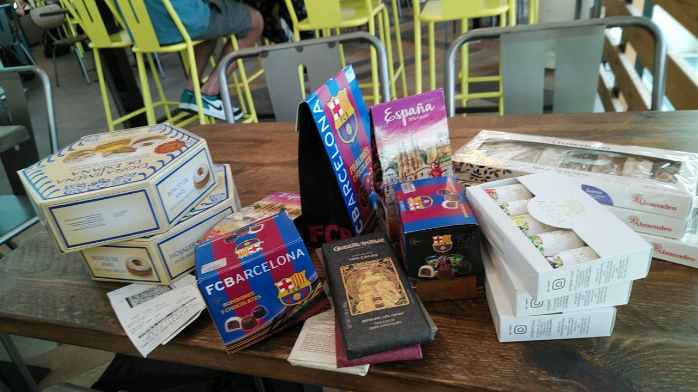

| 1 | : | Después de volver a Japón, soñé con España por algún tiempo. |
| 2 | : | Nos habían dicho que había muchos carteristas y ladrones en España y que tuviéramos cuidado. |
| 3 | : | A algunos clientes de John les han robado en España. |
| 4 | : | Gracias a esa información fuimos muy cautelosos y pudimos pasar nuestras vacaciones en España, sin problema. |
| 5 | : | La gente era amable y amistosa y nunca nos sentimos mal. |
| 6 | : | Todas las comidas eran deliciosas. |
| 7 | : | Sobre todo estábamos muy felices de haber estudiado español. |
| 8 | : | Algún día quisiera ir a Guatemala y hablar español. |